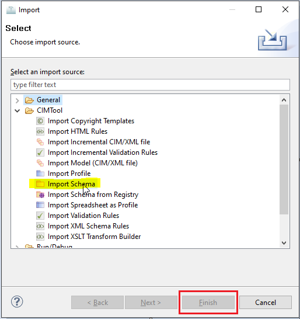
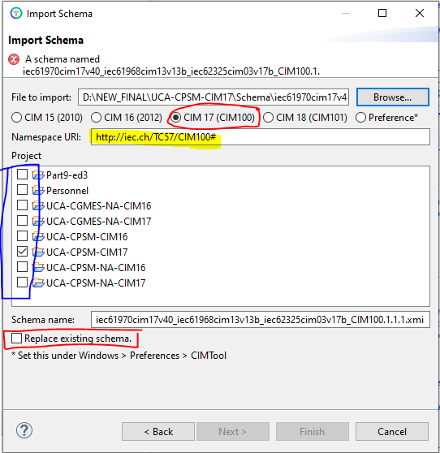

Using CIMTool with Enterprise Architect: Importing a CIM Schema
The CIM UML model is maintained within Sparx Systems UML design tool, Enterprise Architect (EA) as shown.
Before building a Contextual Profile in CIMTool you must first import a version of the CIM UML. This step is typically done when creating a new CIMTool project. However, you can import additional custom UML schemas (i.e. additional schemas containing extensions to the CIM) and co-locate them alongside the base CIM UML schema in your project. CIMTool automatically processes such custom schemas by internally creating a union of them with the base CIM schema. Alternatively, an existing CIM UML schema can be replaced outright in a CIMTool project when a new version of the CIM is released.
The CIM can be imported in one of two possible formats as described later on this page, but first you will need to locate a stable public release of the CIM UML model. For information on where visit our obtain CIM UML models page.
Using an .xmi schema file in CIMTool
Enterprise Architect has an "Export" feature to export to the .xmi format. To use this, open the desired CIM UML version of the .eap or .eapx file (e.g. iec61970cim17v38_iec61968cim13v13_iec62325cim03v17a.eap) in Enterprise Architect.
Note
To export to .xmi the full (paid) version of Enterprise Architect is required. The Enterprise Architect Lite (free) version does not support this capability.
In the top ribbon, select the Publish tab, then click Export-XML
You'll be presented with the next dialog. Click the "Other Formats:" Publish button.
When the "Publish Model Package" dialog appears use the following export options highlighted in the screenshot below:
- The "Package" field is used to specify which package in the model hierarchy you wish to be exported. Specifying the root "Model" package as shown in the screenshot is most common. However, if for exmaple your profiling work is focused exclusively on classes located hierarchically within the Grid (i.e. formerly IEC61970) package then selecting that as your Package will limit the scope of the packages to be exported and reduce the size of the
.xmifile. - Under "General Options" be sure that only the "Format XML Output" check box is selected.
- For the "XML Type" selection, choose the "UML 1.4 (XMI 1.2)" option.
- In the "Filename" field, select or enter the filename you want (save to location and name) for the XMI file you are exporting. Using a name that matches the the name of your
.eapfile is recommended as it helps identifying the version of the model the XMI export was for (e.g.iec61970cim17v40_iec61968cim13v13_iec62325cim03v17a.xmi)
Finally, click the Export button.
Note
A couple of noteworthy items.
Selecting the "Export Diagrams" option will include the UML diagrams in your exported .xmi file. This adds no real value for CIMTool but can be useful later if you do not have the original .eap project file. In this case the .xmi can be re-imported into Sparx EA and the UML class diagrams reconstituted along with the model.
In the early years, CIM was maintained using IBM's Rational Rose UML modeling tool. In the late 2000s, when the CIM was first migrated to EA, XMI exchanges between the two products was necessary and the "Unisys/Rose Format" checkbox selected when sharing the CIM between the two products. Per EA's "Model Exchange User Guide": With XMI, model details can be exchanged between different UML tools and other tools that are capable of using XMI. Limited support for export to Rational Rose is provided using the Rose version of the XMI 1.1 specification, as implemented by Unisys for Rational products." Note that today (as shown in the screenshot) the recommended .xmi export settings for CIMTool are "UML 1.4 (XMI 1.2)", making the "Unisys/Rose Format" checkbox irrelevant. Therefore, if you encounter older CIMTool documentation indicatating the need to check the "Unisys/Rose Format" checkbox it should be ignored.
Using an EA Project file in CIMTool
Exporting XMI can be slow. An alternative is to directly import an Enterprise Architect project file (.eap, .feap, .qea, etc.) into CIMTool. This eliminates the need to export anything from EA before importing to CIMTool.
Tip
Beginning in release 16.x of Enterprise Architect .eap and .eapx files are only supported in the 32-bit version of EA 16.x. If using the 64-bit EA 16.x or later and using a release of CIMTool prior to 2.1.0 you will need to export your models as .xmi and import them into CIMTool to do your profiling. If using CIMTool 2.1.0 or later then EA 16.x 64-bit .qea or .qeax project files can be imported and used directly by CIMTool. For further information refer to EA's EAP/EAPX File to QEA File Format page for a better understanding of changes in EA 16.x.
File Format Considerations
The following table highlights the various tradeoffs of utilizing one format over another:
| Format | Description | Pros | Cons |
|---|---|---|---|
.eap / .eapx |
Native EA project files. Standard in EA 15.x releases and earlier the internal format is based on MS Access. Specifically, .eap files are based on the Jet3.5 engine and .eapx on Jet4.0 (see Access Database Engine History) with both stored as binaries. The Jet database engine is available only in 32 bit configurations. Which means that the .eap and .eapx file formats are still supported in the 32 bit version of EA 16.x, but not in the new 64 bit version of Enterprise Architect 16.0. To keep using the data in an .eap or .eapx file in a 64 bit release of EA 16.x you must transfer the contents of the file to another project that the 64 bit version can access. This project can be a file (such as a .qea or Firebird file) or a database repository (such as a SQL Server or MySQL database). Refer to the Sparx article Migrate an EAP/EAPX File to QEA File Format for how to peform this. |
Both file formats can be imported directly into CIMTool without the overhead of having to export as an .xmi file. Multi-language support via unicode is available with an .eapx file. |
If hosting a CIMTool project on Github it is not recommended that an EA project file be used (see: About large files on GitHub and Git LFS). Instead the .xmi file format is recommended. The .eap file format does not support unicode and therefore is not ideal for profiles derived from CIM classes or attributes with descriptions and/or notes containing non-ASCII characters. NOTE: To convert an .eap file to an .eapx format see Use Languages Other Than English which has the link to the EABase JET4 file that can be used for this purpose. Visit the Project Data Transfers page for further information on this process. If choosing to migrate to Jet4 then EA must also be configured to use Jet4. Refer to the General Options page for details. |
.feap |
Native EA project file. The .feap project file type was introduced in the Sparx EA 10.x release in 2013. The .feap file is a compact, single-file database for smaller projects and is the only EA project file format that does not require conversion when opening in the newer 64-bit releases of EA 16.x or later. The internal format of these files is based on the Firebird SQL open source database and stored in binary form. |
This native EA project file format is supported starting with release 2.1.0 of CIMTool and can be imported directly without the overhead of having to export an .xmi file. |
|
.qea / .qeax |
Native EA project files. Introduced in the 64-bit release of EA 16.x, the internal format of these files is based on the SQLLite open source database and stored in binary form. Both file types support basic replication with the .qeax extension indicating that file sharing is enabled. A .qeax file can simply be renamed back to .qea to disable file sharing. |
These native EA project file formats are supported starting with release 2.1.0 of CIMTool and can be imported directly without the overhead of having to export an .xmi file. |
|
.xmi |
The XMI (XML Metadata Interchange) format is an Object Management Group (OMG) standard for exchanging metadata information via Extensible Markup Language (XML). | Exporting the CIM as an .xmi schema file has added flexibility not available when using a native EA project file. Specifically, a subset of the CIM can be exported by simply selecting a specific package for export. This approach can be used to reduce the size of the schema file in a CIMTool project. Given that profiles are commonly defined for a particular domain (e.g. Transmission, Distribution, Market-related profiles) just a subset of the CIM can be exported and used within CIMTool. This is more suitable when hosting a CIMTool project in Github. CIMTool supports the ability to import multiple .xmi schema files and for a user to assign a distinct namespace to each. This is useful when defining and exporting custom extensions as a separate .xmi file that coexists alongside an .xmi for the CIM model. |
Exporting .xmi files can be time consuming and therefore inconvenient if quick iterative changes are needed to the CIM with a reimport into a CIMTool project. In this scenario it is suggested to use one of the native EA project files. The direct use of a project file eliminates the roundtrip time needed for the "make changes to the UML, export to XMI, import XMI into CIMTool" cycle. |
Tip
When attempting to load an .eap(x) CIM project file into a 64-bit release of EA 16.x you will be prompted with a dialog that will guide you through upgrading the file before continuing.
Importing a Schema File into a CIMTool Project
To import an .xmi, .eap or .eapx file into CIMTool, open the project you'd like to use the schema with and the navigation to the Select File -> Import menu. In the Import dialog, expand the CIMTool folder and select Import Schema and click the "Finish" button.

Browse to find the .xmi, .eap or .eapx file then select the checkboxes next to the project(s) you want to import the schema file into.
Next specify the namespace to be associated with your imported CIM schema. The set of radio buttons provide the default namespaces for the most recent release of the CIM. The "Preference*" radio button option gives a generic namespace which commonly is edited as needed. If importing an .xmi file containing your own custom extension packages you should provide a unique namespace to associate with this "extensions schema". For more information on extensions visit the topic CIMTool Support for Extension Namespaces.
Finally, if loading changes over an existing schema with the same name be sure to select the "Replace existig schema" checkbox.

Once imported the CIM UML will be stored in the Schema folder of the project.
CIMTool Profiling Tutorial
For further details on how to use CIMTool to create and edit profiles based on the CIM visit the How To section of https://cimtool.ucaiug.io/.